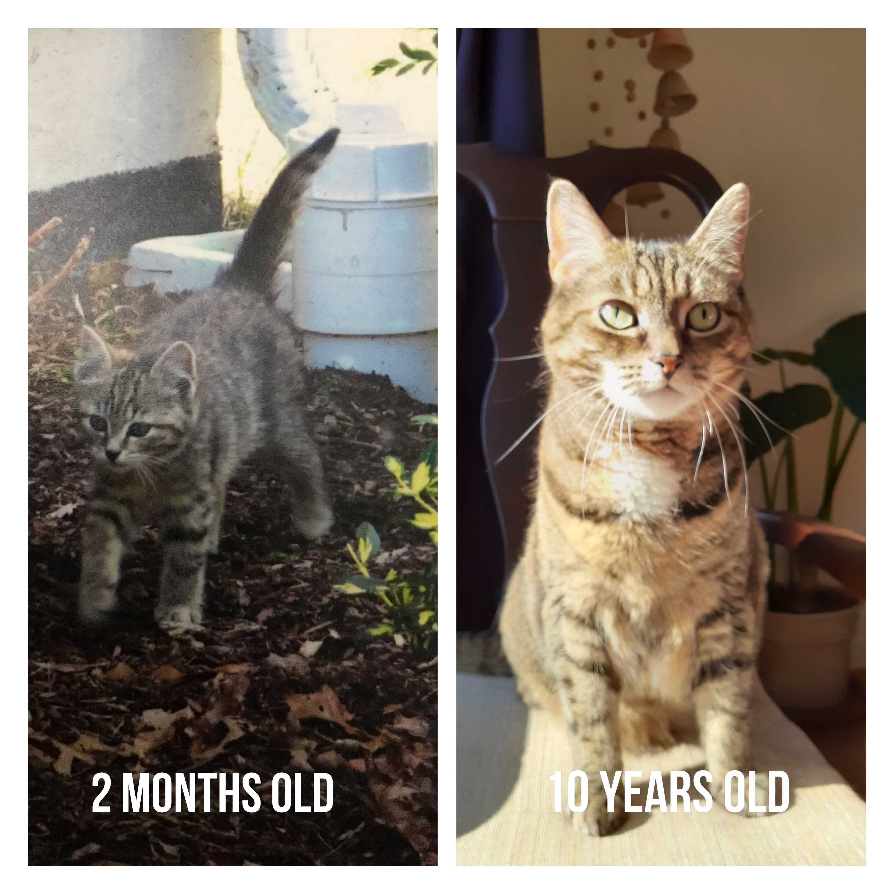
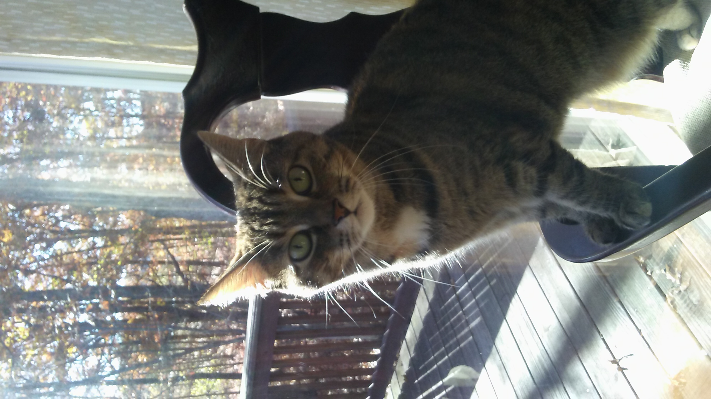

It's that time of the year where the grass gets greener, the sun shines, and the chipmunks come out to
play. Not only am I freed from this stuffy house, but I also don't need to stand next to the heat as
much! The days may still be a little bit chilly but the days are so much more refreshing and
aesthetically pleasing. Now that Spring is here I need to start training again so that I can catch
Chippy Chipmunk and bring him home to play. Last year, I was able to bring him home to play multiple
times, but my humans never really let him stay long. I don't know why he's so fun and I don't mind
playing altogether. My humans have a hard time catching Chippy so they just create barriers and lead him
outside. I have honestly tried many times to teach them how to hunt but they refuse to listen to me.
To keep in shape to get ready for chipmunk season I make sure I sleep through half of
Winter and once Spring hits I start my official training. For my training, I like to sneak up on the
humans, chase the humans, and attack the humans when they are least expecting it. I also like to run
extra laps around the sun during my 5 a.m run. Stretching is also important because you don't want
to
hurt yourself or pull a muscle.
How do you prepare for Spring? Have any fun hunting stories? Let me know in the
comment section and don't forget to follow me on social media!
My Birthday

3-27-2020
Today is my birthday. I am not 100% sure if that is true, but the humans have told me that for the past
10 years and I like being the center of attention. At 5 am when I sing to one of my humans to feed me,
they did not wish me a happy birthday. I let this pass because humans are incapable to follow my
sleeping patterns and they forget everything. At 10 am when I walk into the kitchen my humans give me
extra love and attention, and wish me a happy birthday. Unfortunately, the weather was still chilly and
my humans did not allow me to take a stroll in the front yard. I wish my birthday had better weather so
that I can go out, catch my favorite chipmunk (Chippy), and bask in the glory of the birthday hunt.
I did find it quite odd that the humans did not have my party-ready when I woke up
at 5 pm. I decided to go back to sleep as I was upset at the thought that they did not sing to me.
Seriously
though...THEY DO IT EVERY YEAR AND THIS YEAR THEY DIDN'T?!?!?... As I was sleeping in my drawer I
heard
from
far away the humans calling my name and when I walk in the kitchen they started singing and there
was a
banner! They did care! They even made me my fish-shaped cake! Today was such a great 10th birthday
that
I got to spend with my humans!
My Morning Routine

4-19-2020
Hey, felines! I thought today I would share my morning routine! My morning officially starts at 5 a.m and
I'm already feeling a little hungry at this time. I head to one of the human's room and oh so gently ask
(multiple times) one of my humans to feed me. I don't know about you guys but humans do not do well at 5
a.m. They for some reason prefer to sleep at this time and it's one of the best times to be awake! I
mean I love running around the house early in the morning and playing with my squeaky mice. Humans are
all groggy and they get upset when I try to invite them to play "Knock the Stuff off The Table". Anyway,
after eating, I play a little and I walk the house to make sure everything is safe and perfect. I
eventually start to feel tired and head to my favorite drawer to sleep. At 9 a.m one of the humans wakes
up and I get up as well. I lead them to the kitchen to have them open the curtain for me so that I can
see outside, give me more food, clean water, and give me attention. I spend the rest of the morning
rolling around in the living room, looking outside, and watching my humans cook their food.
Also, if the weather is nice my humans let me go outside for a while! I love
looking for chipmunks, rabbits, scratching trees, rolling around in the dirt, and sunbathing. I also
love watching the neighbors work in their gardens. It's so pretty but my humans don't let me go play
there...but I will one day!
If you guys want to share your morning routine leave a comment down below. If you
have any ideas to wake a human up at 5 a.m let me know! Till next time!